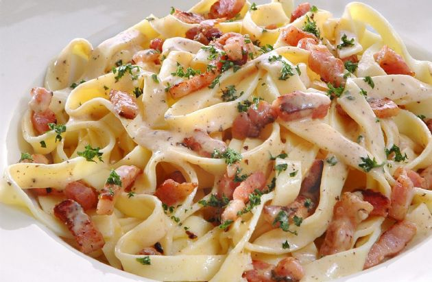

Chicken Bacon Carbonara

What is Carbonara?
Carbonara is an Italian pasta dish from Rome made with eggs, hard cheese, cured pork, and black pepper.
The cheese is usually Pecorino Romano, Parmigiano-Reggiano, or a combination of the two.
Spaghetti is the most common pasta, but fettuccine, rigatoni, linguine, or bucatini are also used.
Normally guanciale or pancetta are used for the meat component, but lardons of smoked bacon are a common substitute outside Italy.
Okay, yeah yeah. But how is it made?
I'm glad you asked! Here's what you'll need:
Ingredients
- 4 oz. chicken breast tenders (though the classic recipe omits chicken, I prefer the extra substance)
- 8 oz. preferred pasta noodles
- 4 oz. bacon slices (chopped or strips is best)
- Olive oil
- 3 large eggs, room temperature
- 4 oz. finely grated Parmigiano-Reggiano
- Salt and Pepper
Steps
- Bring an 8-quart pot of water to a boil. Add the pasta and ~2 Tbs. salt and cook until al dente, about 1 minute less than the package directions, stirring often to prevent sticking.
- While pasta is boiling, put the bacon slices and olive oil in a 12-inch heavy-duty skillet (not cast iron), and cook over medium heat, stirring occasionally, until golden-brown but not yet crisp, 6 to 8 minutes. Remove from heat.
- When pasta is ready to be drained, slowly whisk in 1/4 cup of reserved pasta water to egg mixture, drain pasta and then quickly add pasta and egg mixture to skillet with finished bacon, tossing continuously with tongs, until the pasta is well coated, 15 to 30 seconds.
- Add more of the reserved pasta cooking water if needed to achieve a creamy consistency.
- Serve hot, sprinkled with additional black pepper to taste.